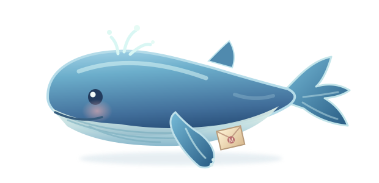

A little hello,
before anything else.


Someone dropped off a letter. Open it whenever you feel like it.
Hey, Maha.
I know you're not feeling great today, and I know that's not the only thing on your mind. You don't have to explain any of it, put it into words, or figure everything out right now. You don't have to pretend today feels any easier than it does.
I just want you to know that you're not doing this alone. There are people who care about you — all of us — and we'll be here. No speech, no big advice. Just here.
I've been making a little world for you for a while now. It's not finished, and I didn't plan on sharing it this way, but I thought a small piece of it might keep you company today.
Also, I wanted to send a proper hug. Unfortunately, the delivery logistics are terrible. So, until I work that out… would you accept a virtual one?
Nothing here needs an answer in real life.